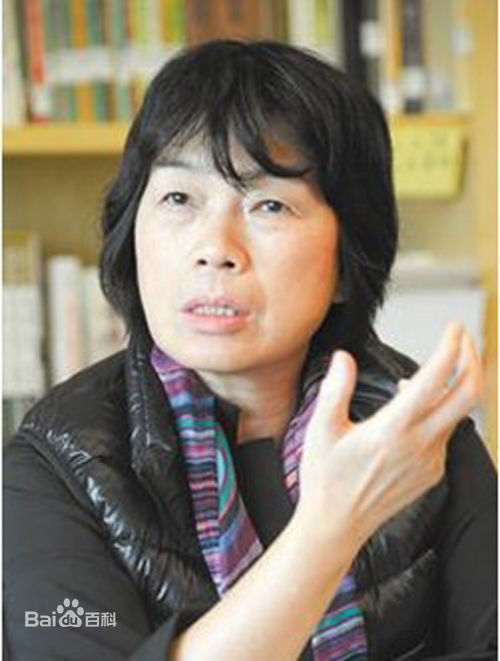

|  | 遇见书吧 |

|
|  | 遇见书吧 |
|
| 1、作者介绍 2、类容介绍 3、创作背景 4、作品赏析 |
1、作者介绍

龙应台，祖籍湖南衡山，1952年生于台湾高雄，1974年毕业于成功大学外文系，后赴美深造，攻读英美文学，1982年获得堪萨斯州立大学英文系博士学位后，一度在纽约市立大学及梅西大学外文系任副教授。1983年回台湾，先在中央大学外文系任副教授，后去淡江大学外国文学所任研究员。1984年出版《龙应台评小说》一上市即告罄，多次再版，余光中称之为“龙卷风”。1985年以来，她在台湾《中国时报》等报刊发表大量杂文，小说评论，掀起轩然大波，成为知名度极高的报纸专栏作家，以专栏文章结集的《野火集》，印行100版，销售20万册，风靡台湾，是80年代对台湾社会发生巨大影响的一本书。1986年至1988年龙应台因家庭因素旅居瑞士，专心育儿。1988年迁居德国，开始在海德堡大学汉学系任教，开台湾文学课程，并每年导演学生戏剧。1988年底，作为第一个台湾女记者，应苏联政府邀请，赴莫斯科访问了十天。1996年以后龙应台不断在欧洲报刊上发表作品，对欧洲读者呈现一个中国知识分子的见解，颇受注目。自1995年起，龙应台在上海《文汇报》“笔会”副刊写“龙应台专栏”。与大陆读者及文化人的接触，使她开始更认真地关心大陆的文化发展。在欧洲、大陆、台湾三个文化圈中，龙应台的文章成为一个罕见的档案。
2、类容介绍
《目送》散文集共由七十三篇散文组成，是为一本情感性的文集。书中，龙应台写父亲的死亡、母亲的衰老和失智；写对父母的怜惜和体恤，写兄弟携手共行，儿子的离别，朋友的牵挂；写自己的失败和脆弱，失落和放手，以及一个人的走路、赏树、观鸟、拍照、生活等。从牵着孩子幼小的手、情意满满的亲情，到青春后期孩子与自己渐行渐远的背影；从陪着年迈母亲如带着女儿一般，思及自己也曾是父母眼前一去不返的背影，龙应台娓娓道来。正如作者所说：“我慢慢地、慢慢地了解到，所谓父女母子一场，只不过意味着，你和他的缘分就是今生今世不断地在目送他的背影渐行渐远。你站在小路的这一端，看着他逐渐消失在小路转弯的地方，而且，他用背影默默地告诉你，不用追。”
3、创作背景
;2004年，龙应台父亲的逝世，让她体味到人生如同“暗夜行山路”。此前，五十多岁的她，从未经历过任何至亲的死亡。“这与她台湾‘外省人’的身份有关。”作为从大陆到台湾的移民，除了父母兄弟，小时候的龙应台没有其他家族亲人，因为这一背景，她对许多“人生基础课程”的学习有着严重的时间上的延迟。“如果我在原来的家族，可能十岁就遇到祖父过世、十三岁祖母过世，还会有叔公之类亲戚的人际变化。等他到了五十岁，才上别人十几岁就上过的人生课程，我的父亲过世，第一次上课就是这重大人生事件。”这时她才明白，“有些事，只能一个人做。有些关，只能一个人过。有些路啊，只能一个人走”。
龙应台说，有了对生死的经历之后，开始觉得大部分社会议题其实都只是枝微末节。不过，她说“评论与文学，两者都是我”，而无论笔下书写的是什么，都总有一个核心，那便是对人最深的关切。“就真的明白，在这世间，没有什么可以附着依托，一切都必须是自我承担和接受。于是在感悟与悲痛间写下了散文集《目送》。
4、作品赏析
《目送》这本书，细加辨析的话，慈为慈爱、和善，是输一己之善良关爱于外界，方向向外；悲，为悲悯、同情，是纳别人之痛楚无奈于胸怀，方向向内。无慈难以成悲，无悲亦难以为慈。这两者，互为因果，常常相辅相成，每每联袂而行。
很难想象到笔锋锐利、惯于批判外界现实的龙应台，在《目送》这本书中，开始对亲情作详尽感受描述，也开始对生活作深度的体会与思考，转向私密。如她对生命中两件刻骨铭心事情的描写。
在《目送》中，龙应台明显地将笔触伸向了“人”的内心世界，用散文的方式，述说着生命中的悲欢离合。她娓娓述说，述说着亲情的血浓于水，也述说着亲情离去的无奈与锥心疼痛，但更多的是告诉人们亲人的重要与亲情的珍贵，“作为父母的子女，作为子女的父母，彼此的身份，是在一生之中一次又一次的目送中完成转换——只是第一次的目送是成长，最后一次的目送却永别。” 这或许就是龙应台想要告诉给我们的生活与生命的本真。这些温情的语言，如一剂醒脑益智的良药，使我们深陷尘世羁绊的心灵，一次次得到解脱和自省。
构成《目送》浓墨重彩的华章的部分，也就是写自己父母的那些篇章，首先体现的是一个“慈”字——不用奇怪，父母，是长辈，但是地球人都明白老人即孩子的道理，过了一定年龄的父母，就是孩子，就是晚辈，就是儿女们怀里浓浓的“慈”的最频繁也最紧迫的承受者。无论是《雨儿》所叙述的每天跟妈妈通一次电话、一遍遍给妈妈解释自己就是她的雨（女）儿、到潮州看望妈妈就陪她睡陪她聊、女佣把妈妈带上阳明山就带妈妈去泡温泉、给妈妈拍照，还是《明白》里面记录的那张红色的、正的反的连盖好几个方方正正的章的“银行证明”，还是《散步》里面写到的彻夜不眠之后帮妈妈穿上最暖和的衣服、围上围巾后牵着妈妈的手进行的那场有犬吠声相伴的凌晨散步，《走路》里面所写的历尽艰难、最后以一句句爸爸熟悉的古诗作牵引，让老爸终于从终日枯坐的沙发里站起了身子、迈开了如学步的幼儿一样的艰难步伐……这一切，都是龙应台这支中华的健笔、这位龙家的孝女，奉送给自己父母的浓浓的“慈”。